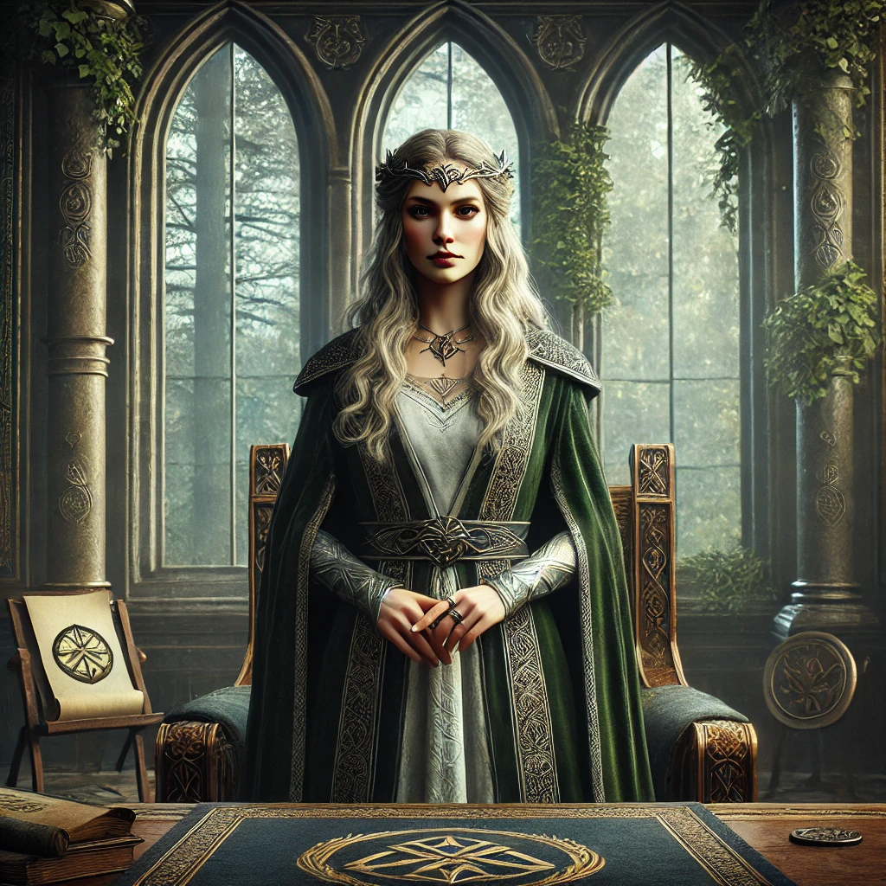
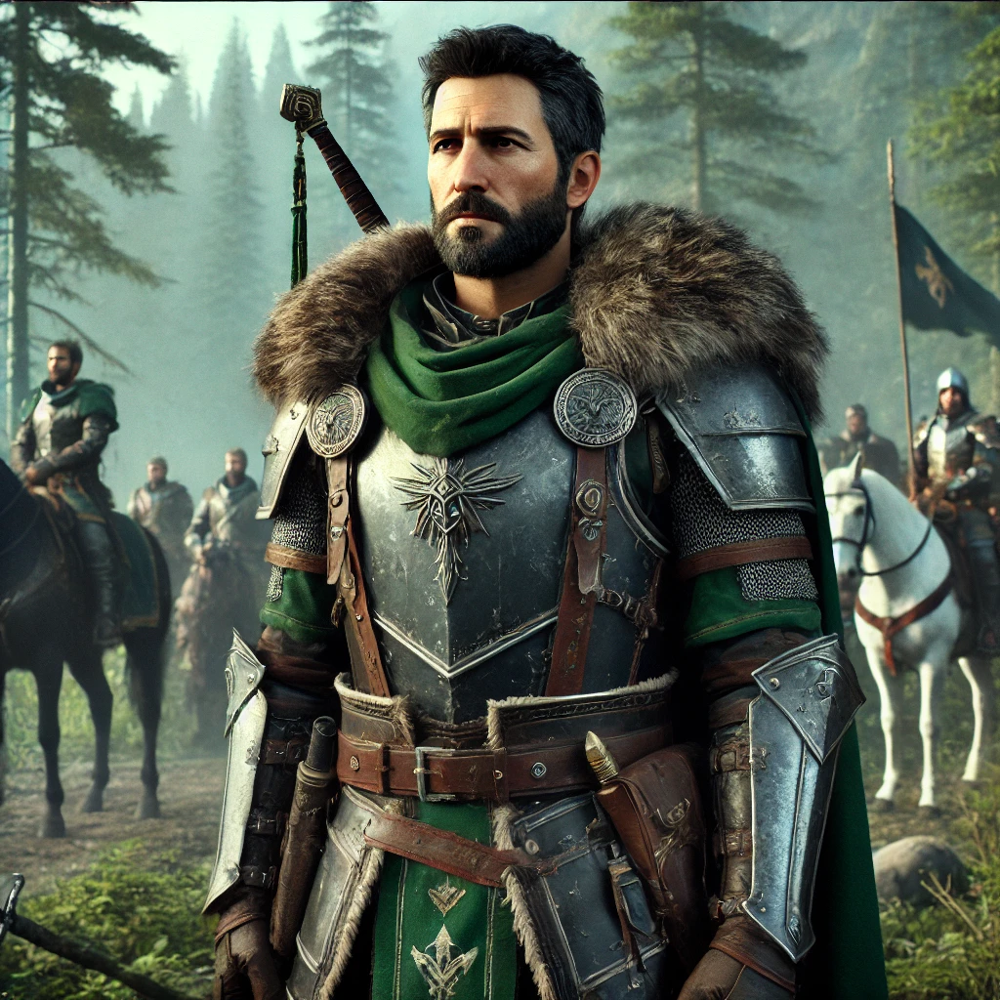
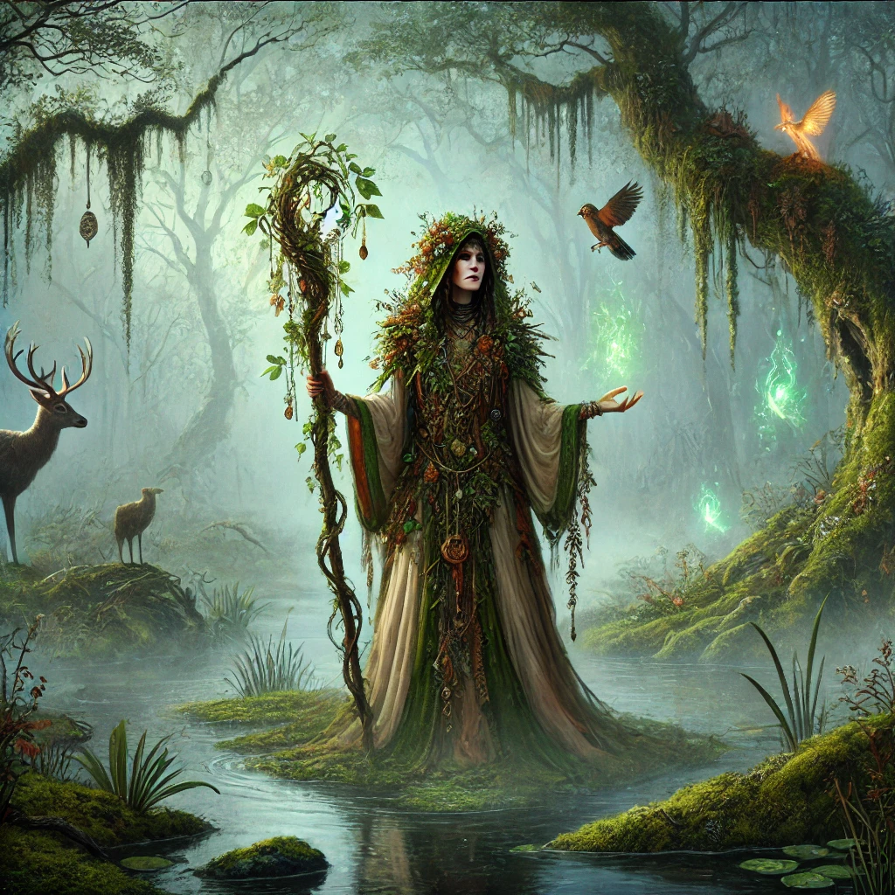
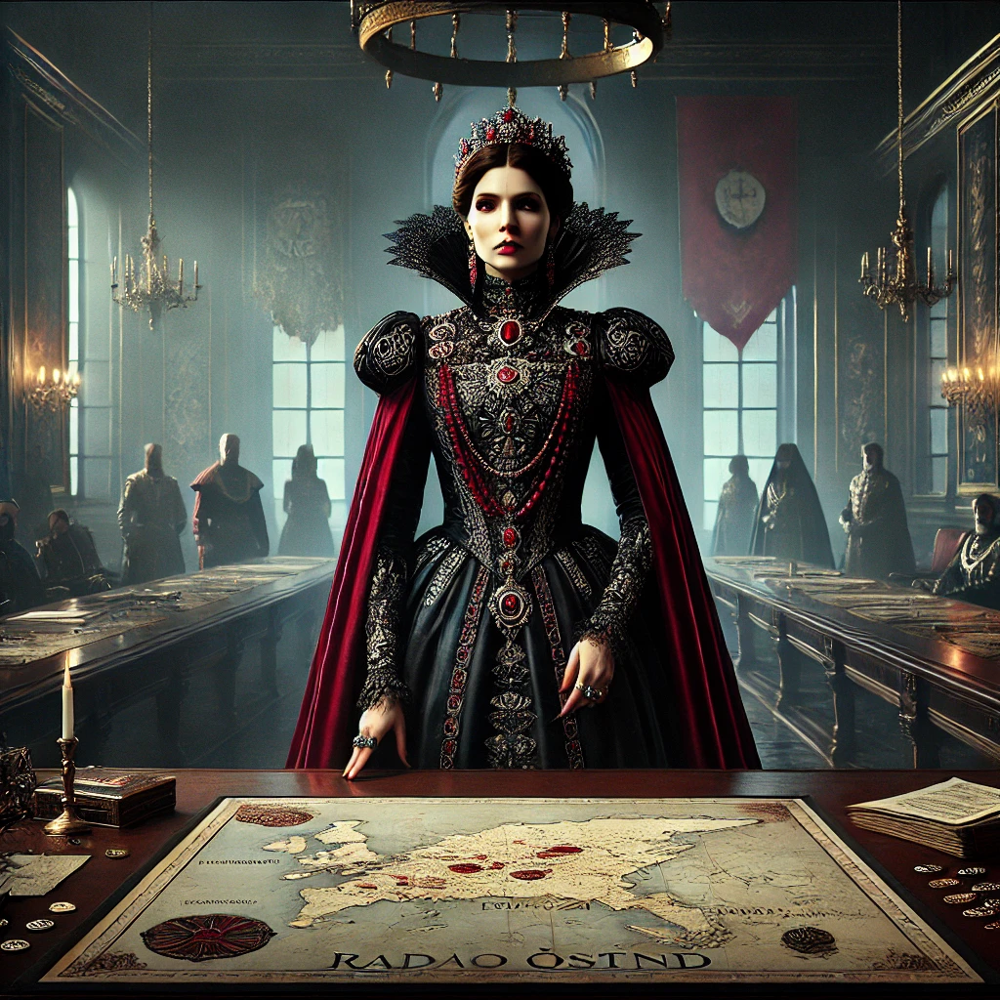
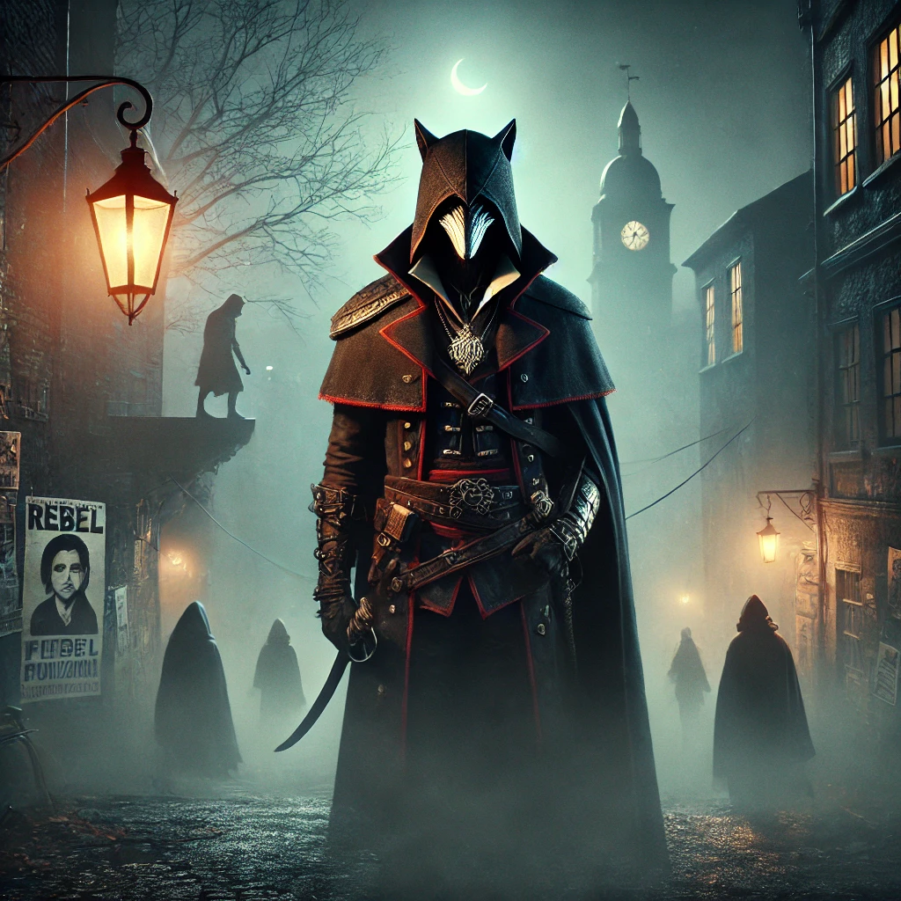

Temnohvozd byl vždy formován osobnostmi, které v sobě spojovaly sílu, víru, tradici i vnitřní konflikt. Každá z nich je hlasem určité části království – hlasem tradic, změny, boje i tajemství.
Postavení: Vládkyně Temnohvozdu, přímá dědička klanu Temných ostnů.
Schopnosti: Mistryně diplomacie, hluboké znalosti starých zákonů a umění vyjednávání.
Charakter: Moudrá, klidná, ale často osamělá ve své zodpovědnosti. Trpělivá vůči názorům druhých, neústupná v otázkách jednoty.
Královna Liora usedla na trůn v období, kdy říše čelí rozkolům, klimatickým změnám a narůstajícímu vlivu frakcí. Její vláda je cestou rovnováhy mezi tradicí a reformou. Stojí mezi sílící radikalizací armády a výkřiky druidů o ztrátě harmonie. Přesto, že je často považována za příliš zdrženlivou, dokázala již několikrát předejít krvavým střetům, které by rozervaly Temnohvozd ve dví.
Postavení: Vrchní velitel armády Temnohvozdu, vůdce vojenské frakce v Radě Ostnů.
Schopnosti: Mistr strategie a vedení v terénu, výjimečný jezdec a taktik otevřeného boje.
Charakter: Přímý, disciplinovaný, věrný pouze říši. Jeho oddanost je silou i slabinou.
Tarik se narodil v pohraničním regionu, kde se naučil čelit banditům i divočině. Je ztělesněním vojenské cti a symbolizuje sílu, na kterou se říše spoléhá v čase neklidu. Často je v rozporu s královnou, protože upřednostňuje rozhodnost a akci před vyčkáváním. Navzdory tomu ji respektuje – a v soukromí ji chrání před hrozbami, o kterých ani ona sama netuší.
Postavení: Nejvyšší druidka a vůdkyně duchovní frakce v Radě Ostnů.
Schopnosti: Věštění, léčivé a obranné rituály, magické propojení s bažinami a zvířaty.
Charakter: Tajemná, klidná a hluboce zakořeněná v prastaré víře. Její slova nesou váhu proroctví.
Mirea je žijícím symbolem rovnováhy. Věří, že současná krize říše není jen politická, ale především duchovní. Vidí rozšiřující se bažiny jako varování samotné země a bojuje za obnovení harmonie – často proti vojenským i šlechtickým tlakům. Věří, že kdo nenaslouchá přírodě, je odsouzen k pádu.
Postavení: Vůdkyně šlechtické frakce v Radě Ostnů, vévodkyně regionu Hlubočan.
Schopnosti: Politická manipulace, diplomatická síť, ekonomický vliv skrze obchodní cechy.
Charakter: Ambiciózní, vypočítavá a chladně racionální. Zastává zájmy šlechty, ale sleduje vlastní hru.
Irina je královniným největším politickým rivalem. Její slova v Radě Ostnů mají váhu a její kroky často předcházejí změny v celém království. Zatímco veřejně prosazuje stabilitu, její tajné dohody se zahraničními mocnostmi ukazují, že budoucnost vidí jinak než koruna. Zda jedná ze zištnosti, nebo připravuje Temnohvozd na těžší časy, je předmětem nekonečných debat.
Postavení: Neznámé – vůdce nebo symbol zločinecké sítě operující v Temnohvozdu.
Schopnosti: Sabotáže, infiltrace, propaganda. Skvělé znalosti v pohybu v terénu a mezi frakcemi.
Charakter: Nepolapitelný, charismatický, údajně bývalý člen šlechty. Pro jedny bandita, pro jiné osvoboditel.
Stínová liška je postava opředená legendami. Někteří věří, že jde o zrádce z řad šlechty, jiní tvrdí, že je to pouze symbol, pod kterým vystupuje celá síť rebelů, pašeráků a svobodných myslí. Bez ohledu na pravdu je Liška postrachem šlechtických kolbišť a zároveň hrdinou pro mnohé z nižších vrstev. Jeho cílem možná není chaos – ale jiný druh rovnováhy.
